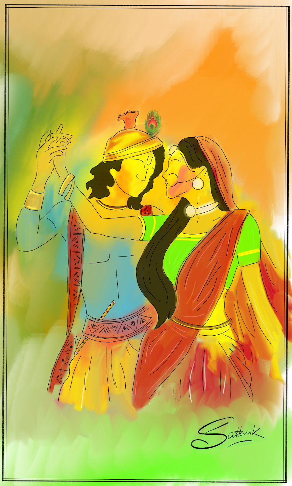
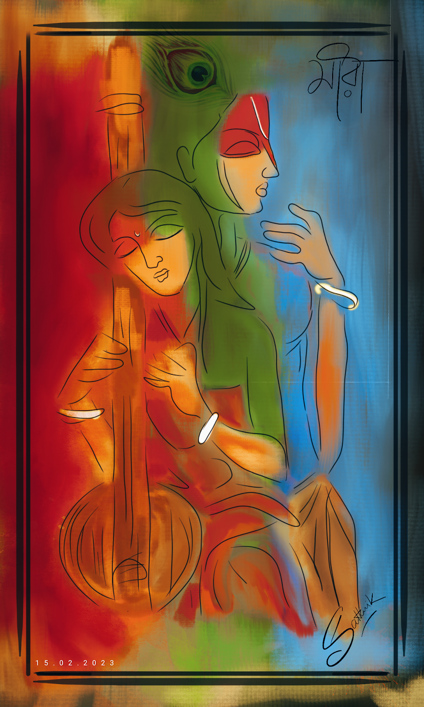
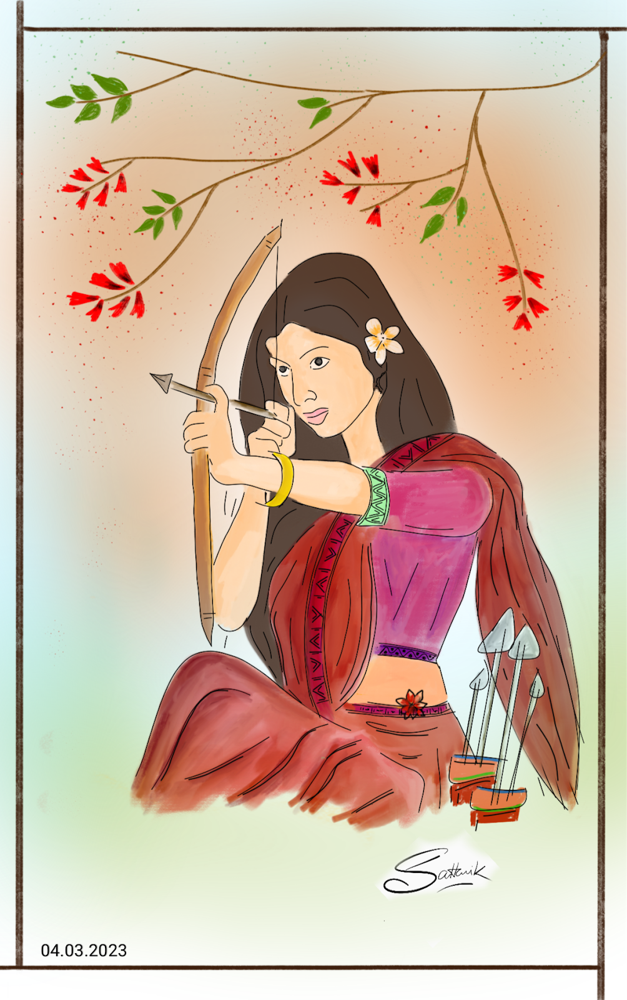
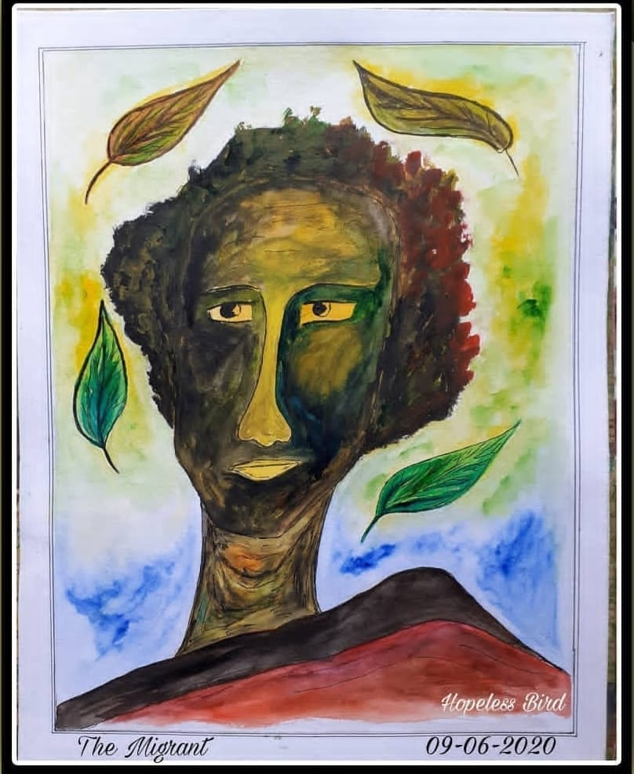
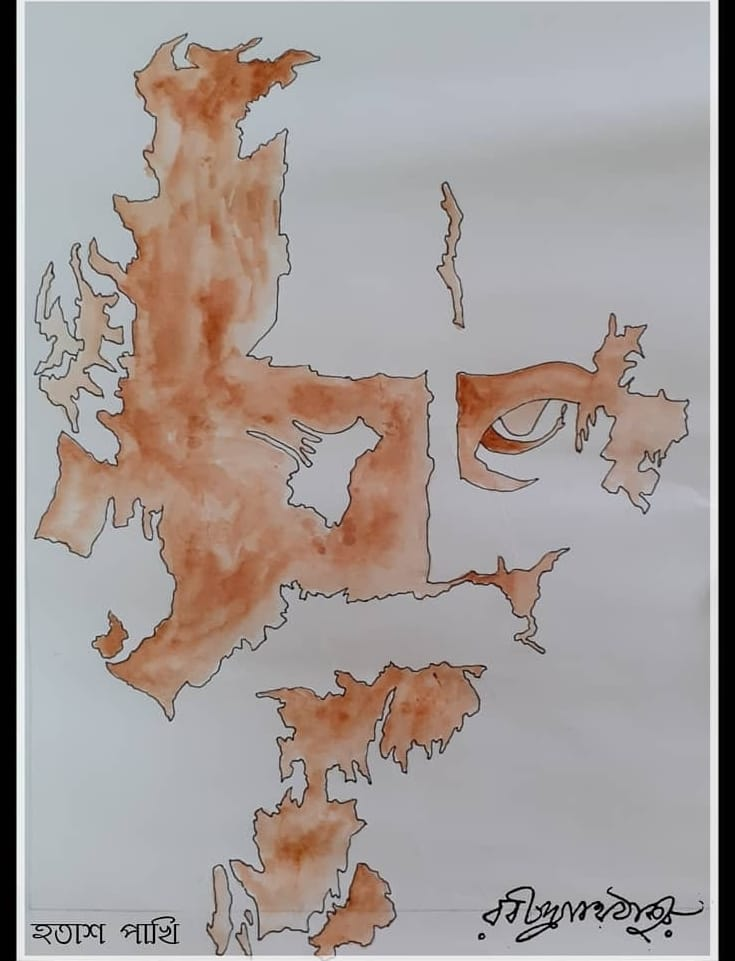
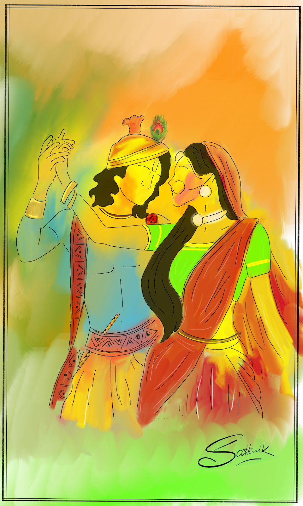
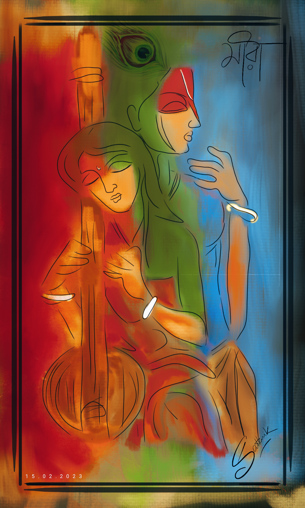
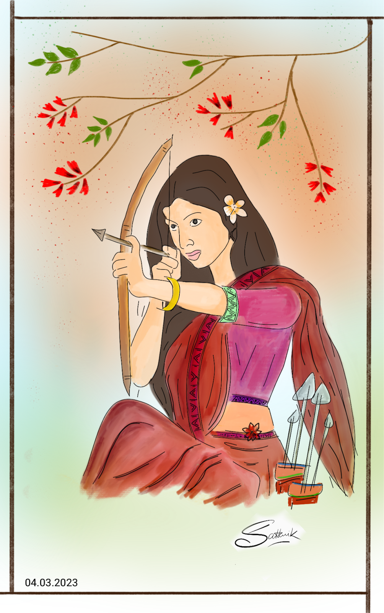
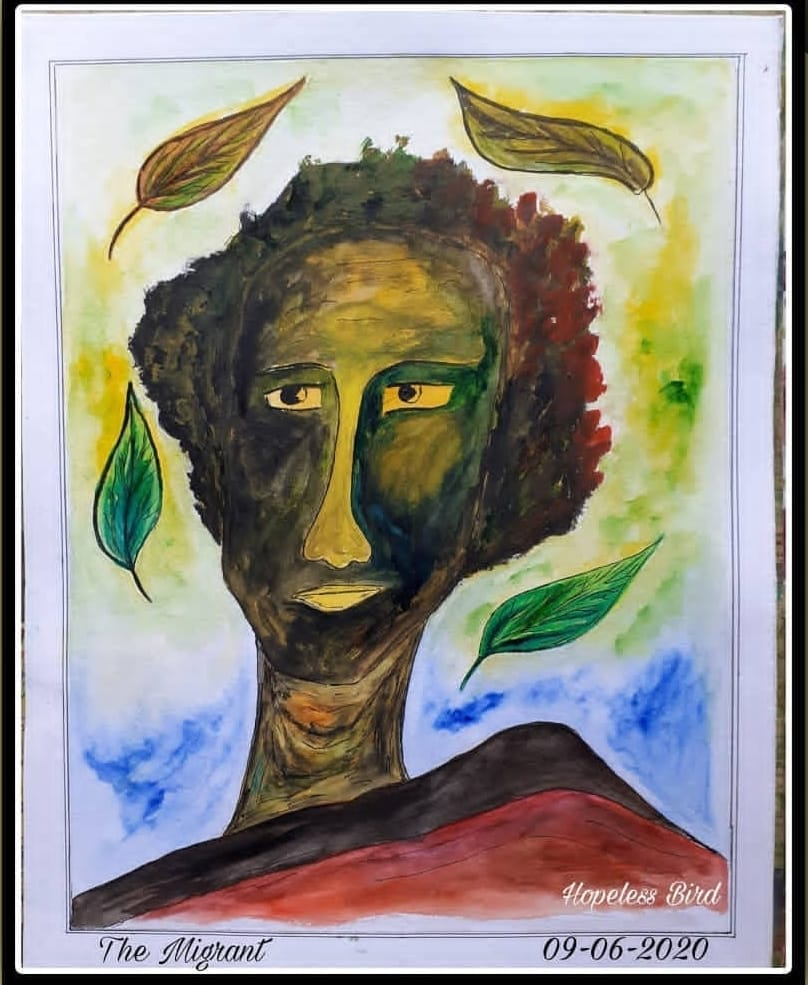
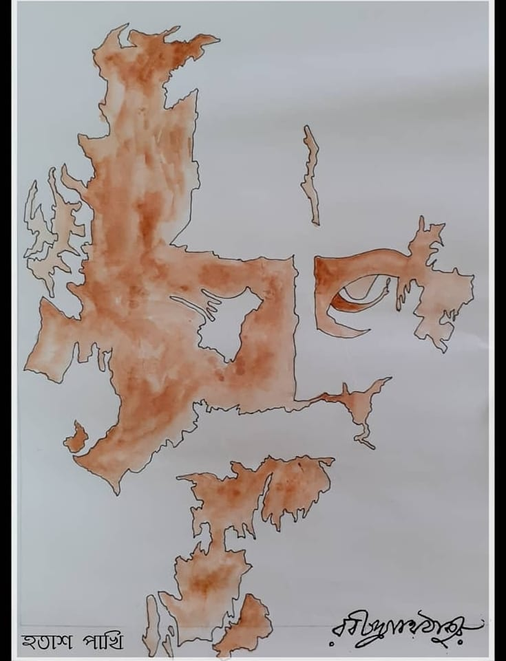

|  |

|
 |  |  |  |
My hobbies play a significant role in my life, providing a perfect blend of relaxation, creativity, and fulfillment. Poetry writing allows me to delve deep into my thoughts and emotions, transforming them into rhythmic verses that resonate with beauty and meaning. Drawing is another passion that helps me express my imagination visually, as I bring ideas to life through shapes and colors on paper. Swimming, on the other hand, is my escape into tranquility—a refreshing activity that keeps me fit while offering a serene sense of focus and calm. Playing the guitar is where my love for music flourishes, enabling me to create melodies that evoke joy and connection. These hobbies not only enrich my personal life but also inspire me to bring creativity and balance into every aspect of what I do.
1.Poem Writing
2.Art and Crafts
3.Guiter Playing
4.Swimming
|  |
|
 |  |  |  |